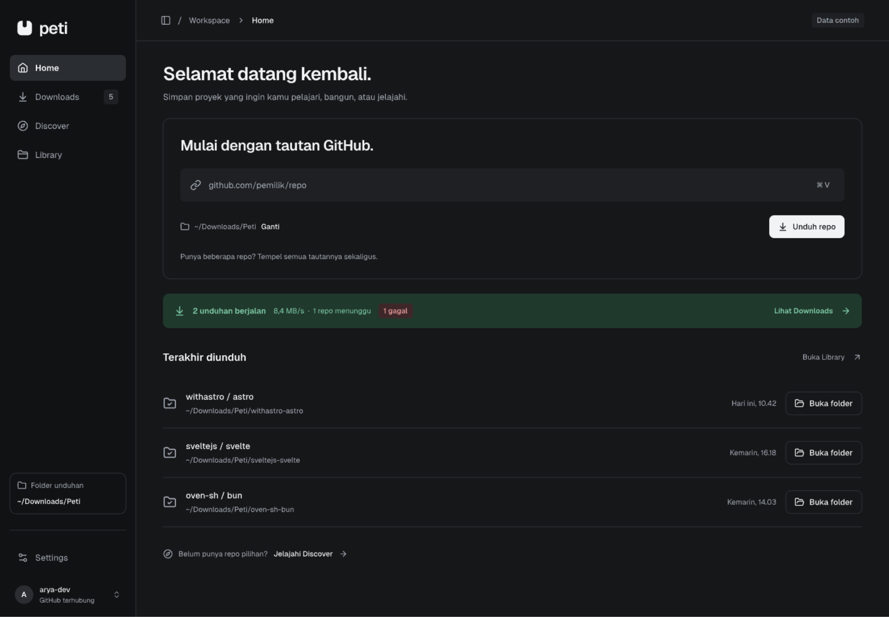
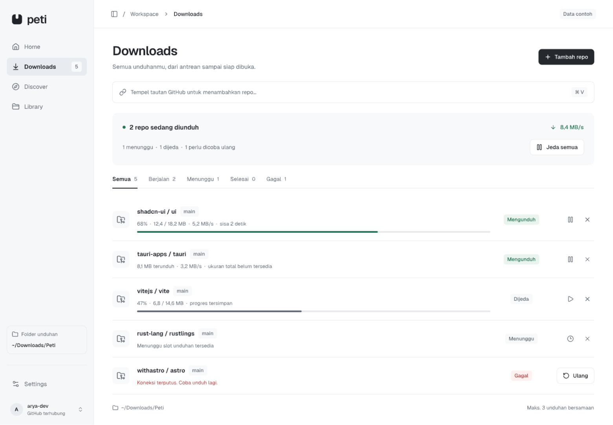
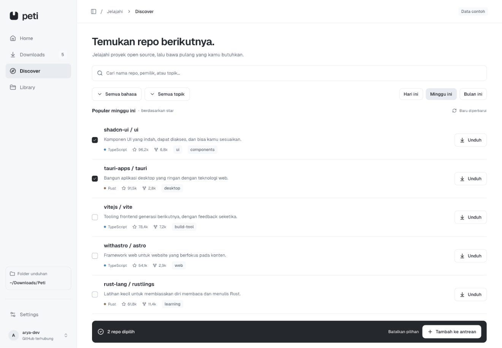

01
Temukan repo
Tempel tautan atau cari di Discover.
Untuk macOS, Windows, dan Linux

Tempel tautan atau cari di Discover.
Pilih folder dan pantau progres.
Buka hasil unduhan dari Library.

Pantau status dan ulangi unduhan yang gagal.
Buka folder repo dari Library.

Repo publik bisa diunduh tanpa akun. Hubungkan GitHub untuk membuat fork.
Tidak. Peti menyimpan snapshot repo tanpa histori Git.
Di folder pilihanmu. Buka hasil unduhan melalui Library.